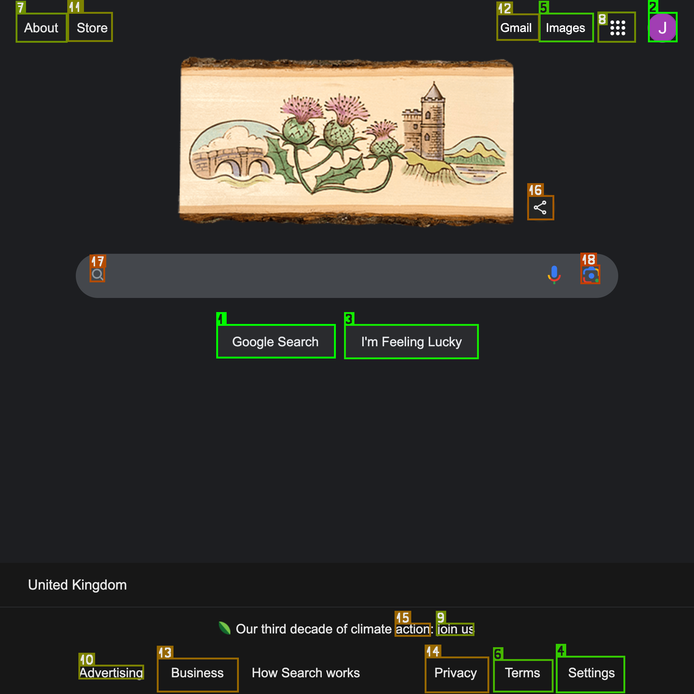

OmniParserIconDetectors
Documentation for OmniParserIconDetectors.
A lightweight Julia wrapper for Microsoft's OmniParser icon detection model that:
- Automatically detects UI elements like buttons and icons in screenshots
- Provides precise location and confidence scores for each detected element
- Includes visualization tools to highlight detected elements
Perfect for automated UI testing, accessibility tools, and computer vision applications. It's powered by Microsoft's OmniParser model and ONNXRunTime.jl.
See the Project Page for more information about the model or try it out in the HuggingFace Demo.
Installation
using Pkg
# Install the package
Pkg.add(url="https://github.com/svilupp/OmniParserIconDetectors.jl")
# Important: This package requires a specific version of ONNXRunTime.jl
Pkg.add(url = "https://github.com/svilupp/ONNXRunTime.jl", rev = "mac120")
# Set the environment variable to allow for automatic downloads
ENV["DATADEPS_ALWAYS_ACCEPT"] = "true"To simplify the installation process, you can run the scripts/0_set_up.jl script.
Getting Started
Loading the model
ENV["DATADEPS_ALWAYS_ACCEPT"] = "true" # Allow for automatic downloads
using OmniParserIconDetectors
# Load the model (downloads weights automatically)
model = load_detection_model()
# Run detection on an image
img = joinpath("test", "images", "test1.png")
detections = detect_icons(model, img)
# Draw the detections on the image
out = draw_detections(img, detections; save_path = "examples/detection_example.png")
Voila!

Usage
Basic Detection
using OmniParserIconDetectors
# Load the model (downloads weights automatically)
# Note: First load might take a few minutes to download the model weights (~850MB)
model = load_detection_model()
# Example paths - both local files and URLs are supported
img_path = "test/images/test1.png"
# url_path = "https://example.com/image.png"
# Detect icons in an image - multiple ways to do it:
# 1. Using the convenience function
detections = detect_icons(model, img_path) #
# 2. Using the model directly (same as above)
detections = model(img_path)
# 3. With verbose output for debugging - useful for troubleshooting
detections = model(img_path; verbose=true)
# The output is a Vector{DetectedItem}, where each item contains:
# - id: Integer identifying the icon class (1-100)
# - confidence: Float64 detection confidence score (0-100)
# - bbox: Tuple of (x1, y1, x2, y2) coordinates in pixelsNote: Use detect_icons(model, img_path; verbose=true) for debugging and to see the details!
Visualization
You can visualize the detections by drawing bounding boxes on the original image:
using OmniParserIconDetectors: load_image
# Load any image (supports common formats: png, jpg, etc.)
img = load_image("test/images/test1.png")
# Example detections
detections = [
DetectedItem(id=1, confidence=99.0, bbox=(50.0, 50.0, 200.0, 200.0)), # High confidence detection
DetectedItem(id=22, confidence=85.5, bbox=(250.0, 100.0, 400.0, 250.0)) # Medium confidence detection
]
# Draw boxes and save the result
img_with_boxes = draw_detections(img, detections;
save_path="output.png", # Optional: save to file
)
# Or just draw boxes without saving
img_with_boxes = draw_detections(img, detections)Detection Results
Each DetectedItem contains:
id: Unique identifier for the detected icon type (1-100)label: Class label (if available, not implemented yet)bbox: Tuple of (x1, y1, x2, y2) coordinates in original image spaceconfidence: Detection confidence score (0-100)
Examples
Check out the examples/ folder for sample code and detection results:
examples/detection_example.jl- Example of detected UI elementsexamples/drawing_example.jl- Example of using the drawing utilities
Model Weights License - AGPL!
This package uses the OmniParser icon detection model from Microsoft, available at: https://huggingface.co/onnx-community/OmniParser-icon_detect
[!IMPORTANT]
For the model checkpoint, please note that icondetect model is under AGPL license since it is a license inherited from the original yolo model. Please refer to the `LICENSEMODEL` or the original file at HuggingFace Repo.
The model weights are downloaded automatically from HuggingFace when the package is loaded, but you must set ENV["DATADEPS_ALWAYS_ACCEPT"] = "true" to allow for automatic downloads.